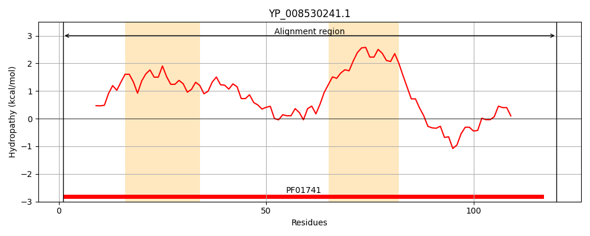
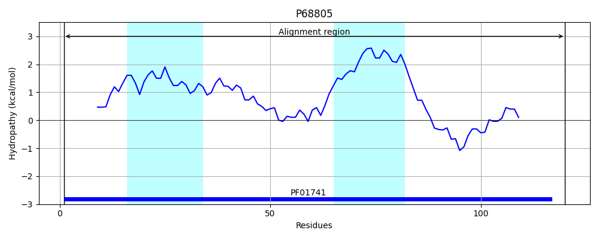
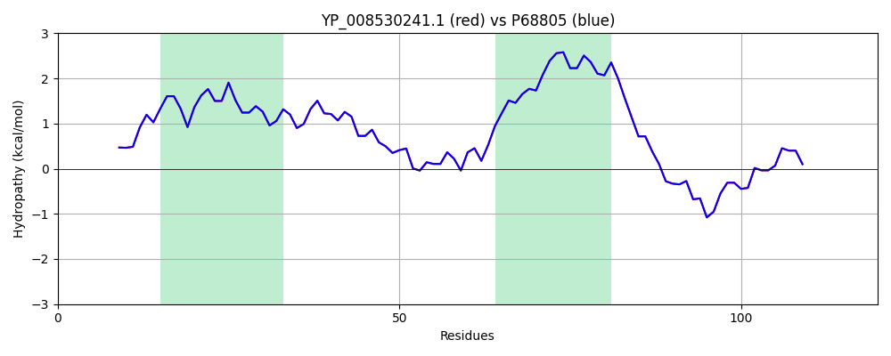

Hit Accession: P68805
Hit TCID: 1.A.22.1.5
Hit Description: gnl|BL_ORD_ID|11252 gnl|TC-DB|P68805|1.A.22.1.5 Large-conductance mechanosensitive channel OS=Staphylococcus aureus (strain NCTC 8325) GN=mscL PE=3 SV=1
Mach Len: 120
e:0.000000
Query TMS Count : 2
Hit TMS Count: 2
TMS-Overlap Score: 1.850000
Predicted Substrates:CHEBI:24870;ion
BLAST Alignment:
| Protein Hydropathy Plots: | |
|---|---|
|  |  |
Pairwise Alignment-Hydropathy Plot: | |
|  | |